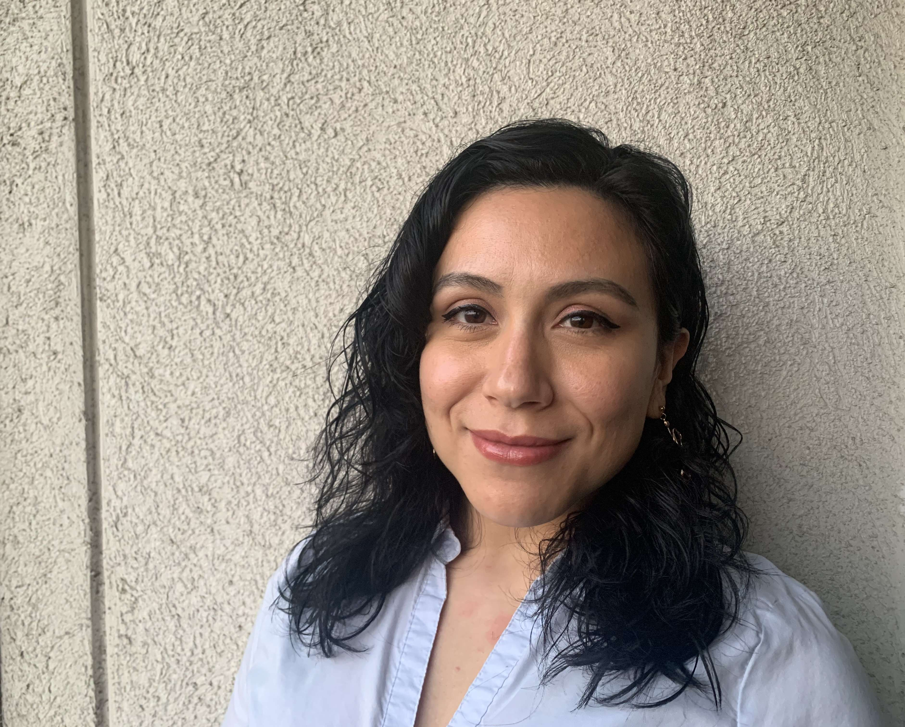

<div id="main-container" class="container-fluid">
  <div class="row">
      <div id="main-content-container" class="col-sm-12 col-md-12">

        <div class="container">
          <div class="row aboutStyle">
            <div class="col-md-6">
              <figure class="figure">
                
                <figcaption class="figure-caption"> Cuando no estoy programando, me gusta leer, jugar 
                  videojuegos y disfrutar de mi familia <3</figcaption>
              </figure>
            </div>

            <div class="col-md-6">
              <p class="text-align-left aboutText">
                Soy una apasionada por el desarrollo de software y por el mundo de la tecnología. Soy bilingüe, "believer del 
                growth mindset", proactiva, asertiva y poseo muy buenas relaciones interpersonales. Tengo habilidades para el 
                trabajo en equipo y la autosuficiencia para enfrentarme a todo tipo de tareas. Además, soy profesional de la salud. 
              </p>
            </div>
          </div>
        </div>

    </div>
  </div>
</div>